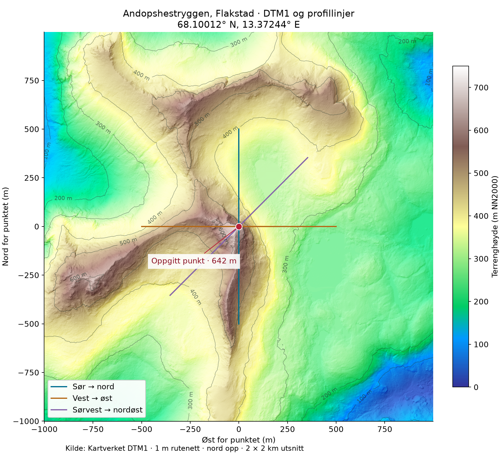

PROSJEKTRAPPORT / 05.11.2026
ANDOPSHESTRYGG-PROSJEKTET
Langs
en bratt rygg.
Et klatreprosjekt ved Andopshesten i Flakstad. Første dokumentasjon med prosjektfoto og offisielle terrengdata.
Undersøk terrenget ↓13.37244° ELOFOTEN
NORGE

01 / UTGANGSPUNKTET
En linje å
undersøke.
Bildet viser en markert rygg og bratte partier. Koordinatet gir oss et fast utgangspunkt for å se på terrengets form og høyde.
Rapporten gjelder Andopshestrygg-prosjektet ved 68.10012° N, 13.37244° E. En klatrelinje, total rutelengde, gradering og bestigningshistorikk er ikke fastslått i datagrunnlaget.
Bildet mangler en kjent målestokk og er ikke brukt til å beregne høyde eller helning. Målingene nedenfor kommer fra Kartverkets terrengmodell.
Se prosjektbildet i full størrelse ↗02 / MÅLT I TERRENGMODELLEN
Høyt over
dalen.
Ved det oppgitte punktet er den interpolerte terrenghøyden omtrent 641,7 m NN2000.
De første 20 meterne nordover faller profilen omtrent 109 meter. Det gir 79,6° fra horisontalen. Over 300 meter nordover er samlet terrengfall omtrent 300 meter, med 45,0° gjennomsnittlig profilhelning.
- Punktets terrenghøyde
- 642m
- Nordprofil, første 20 m
- 79,6°
- Fall, 0–300 m nordover
- 300m
- Total rutelengde
- Ikke avklart

Profiler i rutenettnord, øst og nordøst. Bilineær prøvetaking hver meter. Diagrammet har ulik målestokk på aksene.
Retningen betyr noe.
| Profil fra punktet | Fall over 300 m | Snitthelning |
|---|---|---|
| Mot nord | 300,0 m | 45,0° |
| Mot øst | 339,3 m | 48,5° |
| Mot nordøst | 336,7 m | 48,3° |
Dette er terrengfall langs rette linjer, ikke innmålte klatreruter eller en bestemmelse av fjellveggens høyde. Hvilken del av ryggen som skal klatres, må defineres før en rutelengde kan anslås.
03 / ROMLIG OVERSIKT
Ryggen i 3D.
Et utsnitt på 1 × 1 km, med det oppgitte punktet og nord–sør-profilen. Ingen vertikal overdrivelse.

2 m visningsnett · grunnlag: Kartverket DTM1
Åpne 3D i eget vindu ↗04 / BERGGRUNN OG PLASSERING
Monzonitt ved
punktet.
NGUs regionale berggrunnskart klassifiserer punktet som monzonitt, i en enhet med syenitt til kvartsmonzonitt, stedvis deformert til gneis. Den tilhører Lofotmangeritten og er angitt til omtrent 1,80–1,77 milliarder år.
Dette er en regional kartbestemmelse i målestokk 1:250 000, ikke en bergartsprøve fra ryggen. Bergartsgrensen i et slikt kart avgjør ikke nødvendigvis bergarten i alle deler av en klatrelinje.
De gamle dypbergartene har senere blitt frilagt og formet av heving, erosjon og istidenes landskapsforming. Dagens ryggform er langt yngre enn bergartens størkningsalder.
NGUs punktoppslag ↗
05 / GRUNNLAG OG NESTE STEG
Fra idé
til befaring.
Adkomst, konkret linjevalg og arbeidsopplegg for denne ryggen er ikke beskrevet av prosjekteieren ennå. Rapporten gir derfor ingen ferdig turtrasé eller sikringsplan.
DTM1 / kontrollert
Samme offisielle DTM1-rute som Sørdalen, men et eget utsnitt ved dette koordinatet. 1 m oppløsning og 100 % gyldige høydeceller i 2 × 2 km.
Laserdekning / bekreftet
Metadata ved punktet viser «NDH Lofoten 2pkt 2017». Denne rapporten bygger på DTM1. Et eget rått LAZ-uttrekk for Andopshestryggen er ikke lastet ned.
Kilder og dokumentasjon
Terrengdata: Kartverket, NLOD 2.0. Berggrunn: NGU N250. Prosjektbildet er levert i prosjektmappen. DTM viser én høyde per celle og gjengir ikke overheng. Passordskjermen er en enkel visningssperre; direkte filer kan åpnes utenom den.